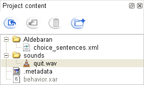

Project content panel¶
What is Project control panel¶
The Project content panel:
- displays the files attached to your behavior.
- allows you to attach files to your behavior. You can then use these files during the behavior execution (a music for a dance for example).

The greyed file behavior.xar contains the behavior, you cannot delete or modify it.
The attached files can be any type of file. You can also organize them with folders.
Project Content panel functionalities¶
Here are the actions you can made using the toolbar of the Project Content panel:
| Button | Function |
|---|---|

|
Import a file from your computer to the project. It will then be attached to your behavior. See also the tutorial to attach a file to a specific box. |
| Export a file from the project to your computer. | |

|
Remove a file from the attached files of the project. |
| Create a folder to structure attached files more easily. |
Note
You may need the path of the temporary file attached to your behavior. To do so, right-click on the file in the Project Content panel and select Copy Temporary Full Path to Clipboard. Then you can paste it onto your address bar or your shell to get to it.